01 / 05
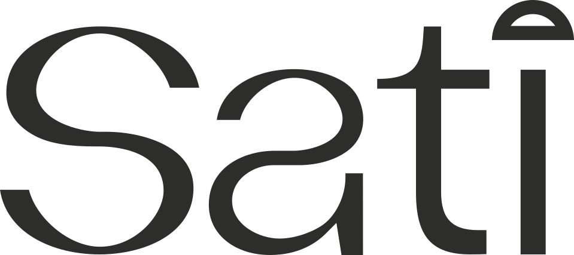
*not my logo designSati
- Objective
- Stamp and Card Design
- Date
- 2026
Sati is a demi-fine jewellery brand working with Thai manufacturers. The brief covered two print pieces — a set of stamp-style stickers and a presence card — each with their own mock-up included.
Inspiration was taken from historic Thai postal stamps, with a duo tone palette and fine linework. After creating the ornamental borders, frame and text, the Photoshop file was set up with several effects to achieve an illustrated look from any image that was placed into the smart object.
Deliverables
- Stamp sticker set — print-ready artwork with a separated die-cut spot colour, bleed and perforation edge.
- Presence card — a small insert card that ships with each order.
- Print production setup — supplier-ready files with the die-cut layer, stock and finish specified.
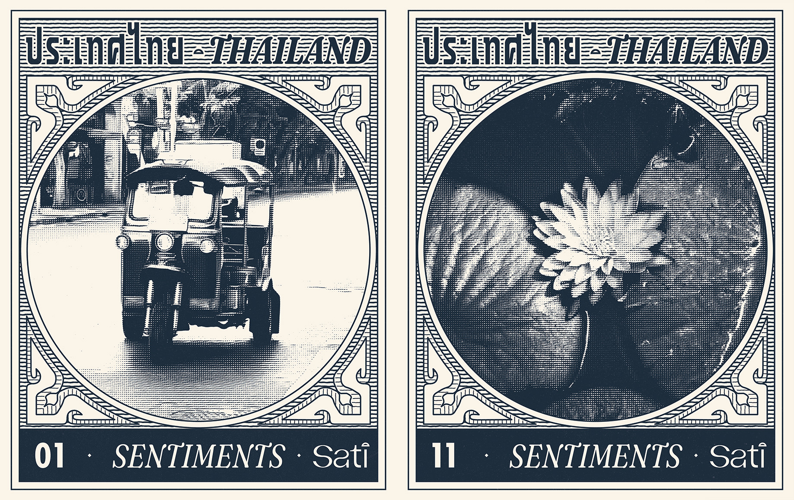


The Café Bar
- Objective
- Logo and Menu Design
- Date
- 2026
The Café Bar, located in Preston, is a well-established Mediterranean café and bar, in business since 1996. Their logo hadn't been updated for some time and needed a refresh. Alongside representing its long-standing roots within the community, the overall energy they wanted to evoke is warmth, sociability and welcoming.
Approach
The type is Baskerville Old Face, arranged to be read quickly, with an orange chair shape — the idea is to "pull up a chair and join in."
The orange chair shape was created from the typeface: the stem of the "B" character was used to create the chair legs, and the ascender from the "h" character for the back support, finally the curve follows the "C" curvature and ties the design together. Additionally, part of the bowl in the "a" was used to create the accent in café.

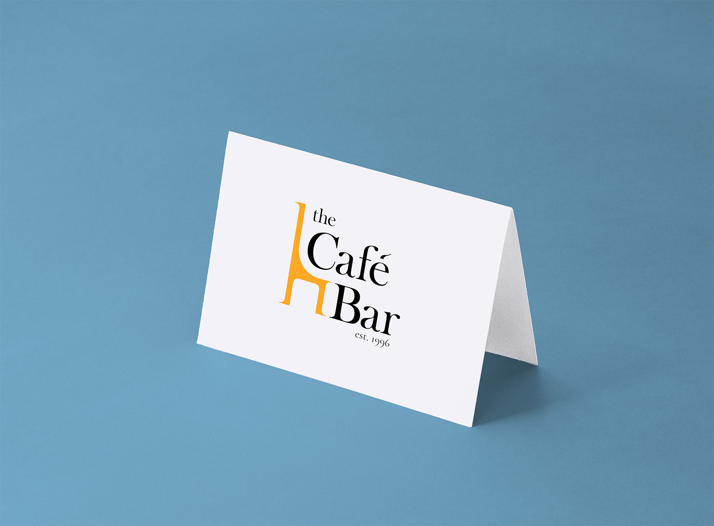
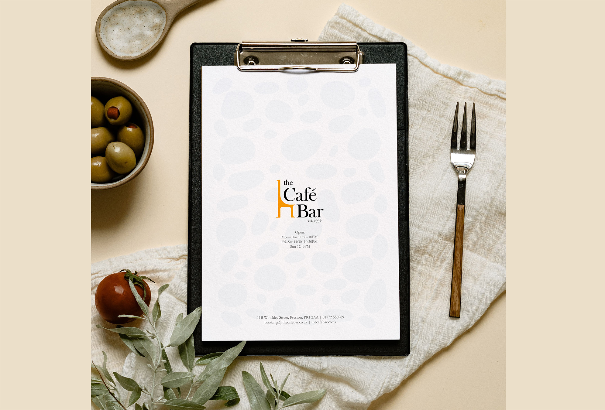
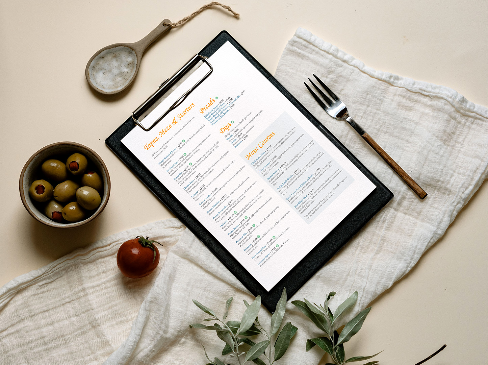
Mindset
Brand identity for a non-clinical men's mental wellbeing charity
- Objective
- Logo and Visual Identity
- Date
- July 2026
A complete brand identity and visual system for MINDSET, a non-clinical men's mental wellbeing charity operating across the UK. The work moved the organisation away from clinical, passive visual cues toward something action-oriented and community-led — a brand that breaks stigma by showing people doing things together rather than sitting with a problem.
Key deliverables
- Logo and identity redesign — a peak for growth and personal challenge, wrapped in a circle for community support. The wordmark splits across a colour break so "MIND" and "SET" carry reflection and action separately, set in a bold geometric sans.
- Brand guidelines and assets — Anton for headers, Inter for accessible body copy, plus web and app specifications covering avatars, device icons and favicons.
- Imagery and graphic system — photography direction built on candid, outdoor, in-motion shots, with geometric templates derived from the mark.
- Applications — business cards, recruitment flyers, Instagram and X templates, and merchandise including caps, t-shirts and wristbands.
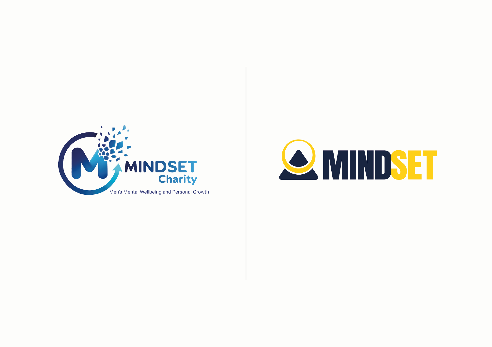
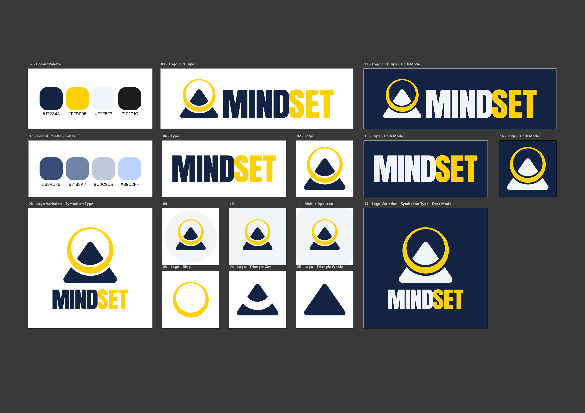
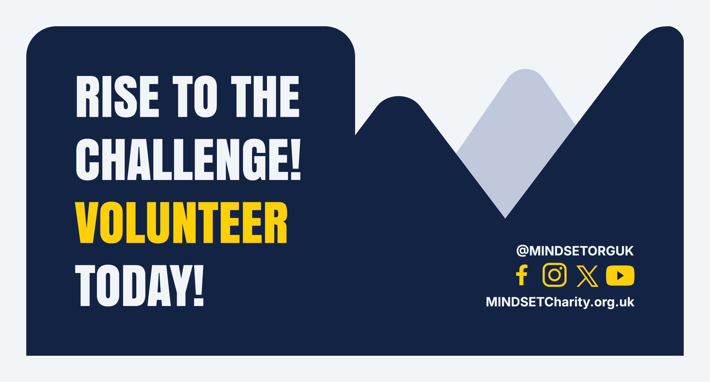
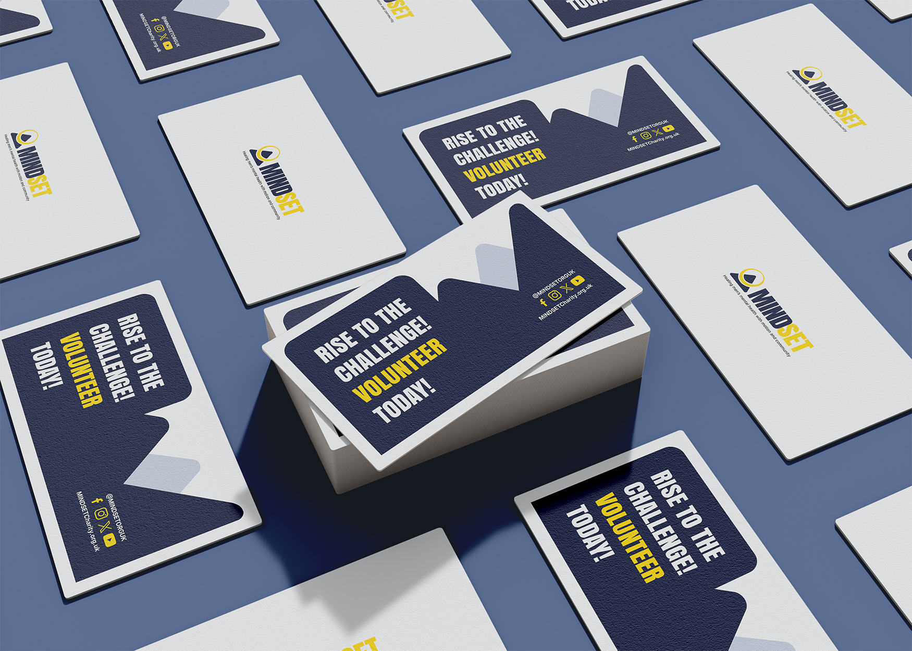
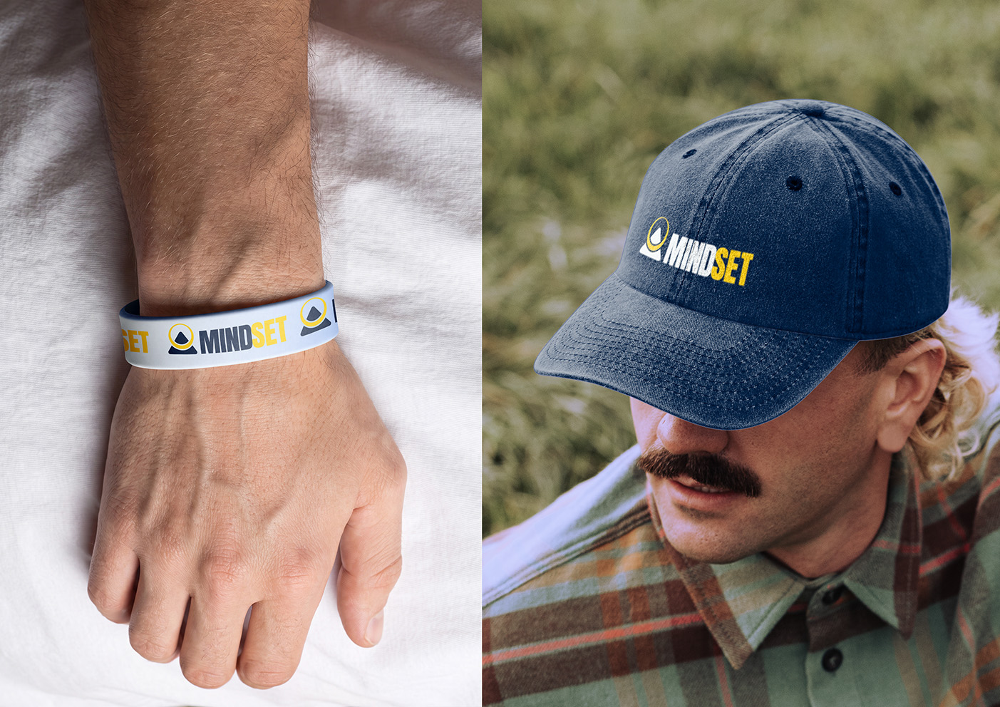
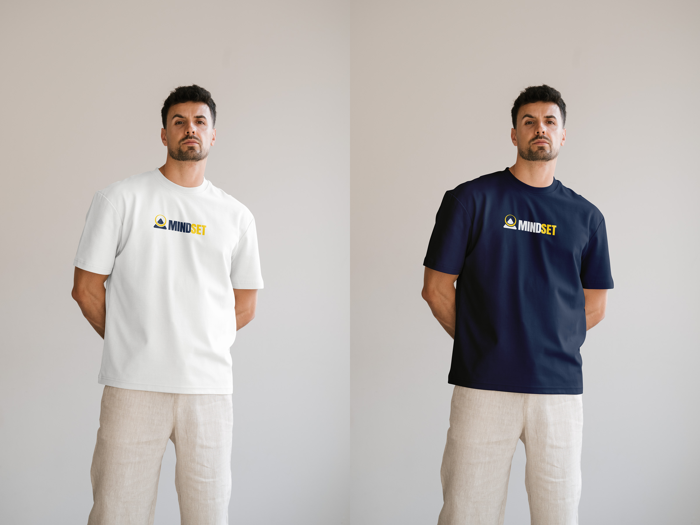

Please see the full brand proposal here
Brand proposal PDFService Plus
Logo design for an auto repair business
- Objective
- Logo Design
- Date
- July 2026
Objective
A logo for an auto repair business that had to read as trustworthy and reliable, and hold its own in a category where every competitor reaches for the same spanner-and-cog vocabulary.
Concept
The client wanted "Service" and "Plus" on separate lines. Filling the gap left by the two lines with a solid blue block turned an awkward constraint into the most stable part of the mark. The symbol itself is an 'S' and a '+' resolved into one form.
Mockups were included so the client could see the mark working across the real touchpoints it would live on — signage, workwear, paperwork and vehicle livery.


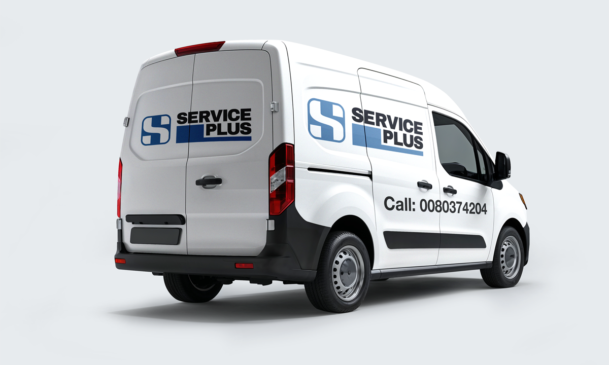